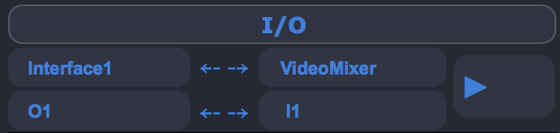

Signal Routing¶
There are some things that the user should have in mind about signal routing in Ina software.
- There are always 8 ins and 8 outs as maximum
- There are no cables
- Sampler has a single routing before going to the mixer
- The main interface has the routing in the bottom right corner
- The sampler has the routing in the bottom right corner [of the sampler]
Note
There is no graphical presentation of the connections done. Soon there will be a popup in the menubar that will allow the user to know which connections he made since software startup.
Main IO¶
The main IO has always pre-built options (alongside with 8 Ins and Outs) for the main interface such as:
- Interface1
- Interface2
- Interpol
- VideoMixer
- Sampler
For the connection to happen (in both connectors (Main and Sampler)) one has to click the arrow key to connect.
{kind=link}
Sampler IO¶
The sampler I/O is exactly the same as the other one but only happens inside the Sampler. Every module has a “-” button next to the “X” and the user can get the ID of each module and route it to one or the other or to the main Sampler Outs[8].